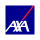
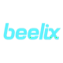
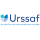
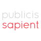

Bonjour, moi c’est Ronan
UX / Product Designer spécialisé dans les produits complexes depuis plus de 8 ans (services publics, B2B2C, outils métiers), avec une attention particulière à l’accessibilité et à la collaboration produit.
Disponible pour une nouvelle opportunité.
Vibe Coding en apprentissage cet été.
Projets
Application Justice.fr

Besoin / Problématique : Accompagner un designer dans la création d'une application servant à rendre les services de la justice plus compréhensible et accessible pour tous.
Solution : Audit de l'application, amélioration des parcours (notamment sur l'accessiblité et la hierarchie des besoins d'informations)
Impact : Tests utilisateurs très concluants et, aujourd'hui, sur l'Appstore d'iOS, une note de 4/5.
Refonte du site Pajemploi

Besoin / Problématique : En trinome avec une autre designer et une PO dédiée, faire une refonte complète du site Pajemploi
Solution : Refonte de tous les parcours, avec à l'appui des entretiens utilisateurs, en mettant des points d'importances non négligeables, tel que le responsive et l'accessibilité numérique.
Impact : Tests utilisateurs très concluants, que ce soit côté parent-employeur ou Assistante Maternelle (ou Garde d'enfant à domicile). Malheureusement, site en ligne depuis peu donc pas de retours utilsiateurs à échelle réelle.
Nissan VMS

Besoin / Problématique : Création du back office de l'e-commerce de Nissan Europe.
Solution : Réalisation d'un prototype fonctionnel et d'un PPT pour permettre la conception et l'intégration d'un back office
Impact : Plus de clarté pour l'équipe de maintenance et ouverture à la possibilité de rajouter des réduction de prix pour les concessionnaires.
Veuillez me contacter si vous souhaitez discuter davantage de ces projets, ainsi que de mes autres projets. En effet, certains projets ne peuvent pas être présentés publiquement en ligne pour des raisons de confidentialité.
Projet IA

Addict helper
Contexte : Un projet personnel pour aider des personnes à mieux comprendre et réduire une consommation problématique, ainsi qu'à pouvoir contacter des aidants ou professionnels, en combinant mon regard de designer avec l'apprentissage du code.
Approche : Je conçois et développe seul l'application (UX, interfaces, logique produit) via le vibe coding (après avoir fait une abalyse terrain), avec la même exigence d'accessibilité et de clarté que sur mes projets professionnels.
Ils m'ont fait confiance






Un projet ? Un besoin ?
Discutons-en.
Si mon profil vous intéresse ou que vous souhaitez échanger, ce sera avec plaisir, soit via linkedIn (nouvel onglet), soit directement par mail à benech.r(@)gmail.com. Au plaisir !
Et si vous souhaitez en savoir plus sur moi ou mon parcours, c'est par ici !